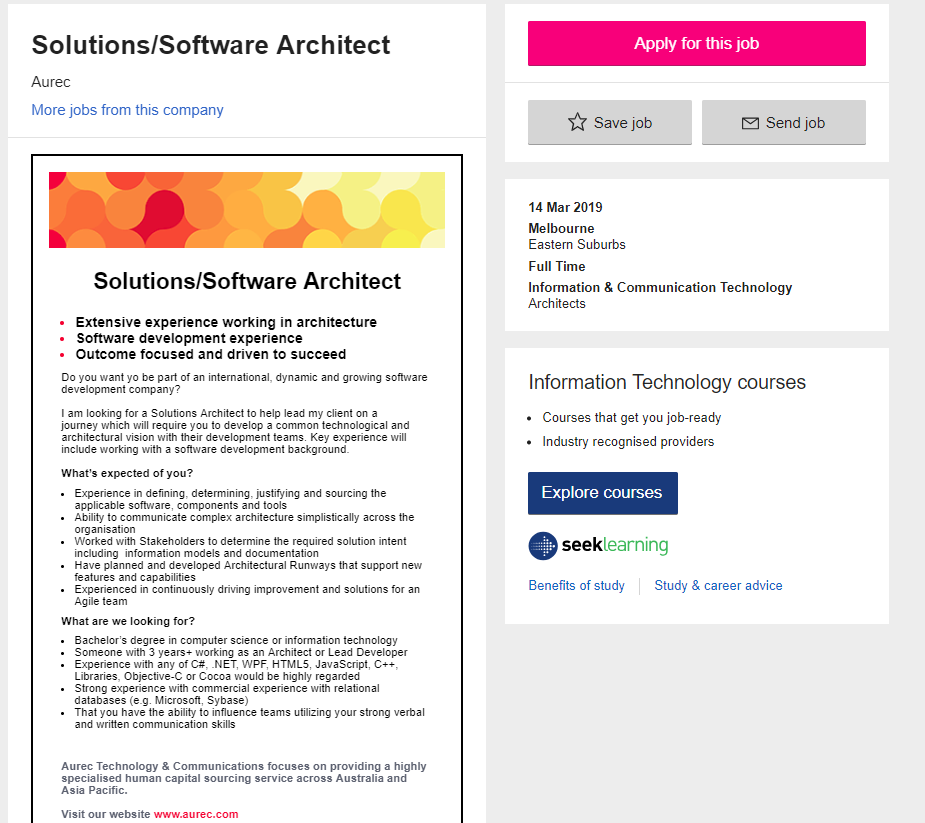

Interest in Information Technology
-
What is my interest in IT?
Information Technology has variety of fascinating product that works well in fast pace production and progress. I love science and this technology is one of the reasons why I love science because in this knowledge I can be able to create something useful that I can share to others with minimum funds and resources. I see "freedom" from this Knowledge.
-
When did my interest in IT start?
At first, when I study Computer System Network and Technology it does not interest me while just learning fundamental part of Information Technology such as computers, routers and type of communication tools but I always have the inclination to learn to programme. So, I self-study the basic programming but in years’ time, I never have thought that I like this knowledge and skills until in my workplace requiring some bits of help in organizing some files and data which must be up to date. Then, I started creating a database platform in Visual Basic from forms and tables to queries and relationships. I kept digging for more knowledge of how to make the system work efficiently with security. While learning and building the software I realised that building the software makes me keen to learn more even took me days and nights of searching and coding until reaching a satisfying product, items per items.
-
Why did you choose to come to RMIT?
I choose RMIT as it is most recommended by Open University for online study. I watched and read some experiences from previous students in regards to the course of Bachelor Information Technology with RMIT curriculum and found that it will be beneficial for upskilling and learning in the wide area of Information Technology to programming, computing, engineering and software designing.
-
What do you expect to learn during your studies?
I believe that all the subject from this curriculum would help me to understand the deep knowledge in Information technology so that my passion for science will have a meaningful product. While looking forward to being guided in building my skill sets in this industry, also hoping to learn the most useful platform in programming from base to the major software tools and technology.
Ideal Job
-
Software engineer
Also known as an application programmer, software architect, system programmer/engineer. This job in brief: The work of a software engineer typically includes designing and programming system-level software: operating systems, database systems, embedded systems and so on. They understand how both software and hardware function. The work can involve talking to clients and colleagues to assess and define what solution or system is needed, which means there's a lot of interaction as well as full-on technical work. Software engineers are often found in electronics and telecommunications companies. A computing, software engineering or related higher degree is often needed.
Key skills required: Analysis, logical thinking, teamwork and attention to detail.
Job Advertisement
-
Solutions/Software Architect
found in seek.com: https://www.seek.com.au/job/38571453?type=standout&searchrequesttoken=051de3a8-2be7-4b67-b7c4-b0ccc700287b
Key skills required: Analysis, logical thinking, teamwork and attention to detail.
 -
What makes this position appealing to me?
Since the role requires great customer service which my skill sets are built from then it will be reassuring for me that I can do the role feasibly and understand the requirements easily when developing a common technological and architectural vision of the client. I have been exposed in the industry of Building Architecture which I was working with business and technical representatives to outline the needs of building services and contractors. As building manager that having the task of looking after teams of contractors and concierges, so then I am confident to use my skills and knowledge to deal any issues that may arise in the workplace making sure team members are producing high-quality performance at all times as required.
-
What skills, qualifications and experience required for the position?
In this role the key skills requirement is having experience with a software development background, also have attained a Bachelor’s Degree in Computer Science or Information Technology. Working as an Architect or Lead Developer for more than 3 years is ideal with experience in any of C#, .NET, WPF, HTML5, JavaScript, C++, Libraries, Objective-C or Cocoa will be a highly regarded. Strong knowledge with relational databases like Microsoft or Sybase and having the ability to influence the team members with verbal and written communication skills are vital in this role.
-
What skills, qualifications and experience I currently have?
In all honesty, these fundamental skills and knowledge for the role of Solution/Software Architect are far beyond in my skill sets, as now I can only relate here is my experience in the workplace ethics. However, my passion is in the world of Information Technology. In this field, I am able to share not just my skills and knowledge but also my ideas for technological innovation. Being part of those people who are shaping the world into a better place is the most meaningful part of our existence.
-
How will I obtain the skils, qualifications and experience required for the position?
This role motivated me to learn the variety of software platforms and methods which not just in a few languages but also different methods in building software. Once I successfully completed the Bachelor’s Degree in Information Technology then the next level should be working in the industry even from small project to the greatest project. I will keep studying the other methods according to the required project in the future and perhaps, studying in computer engineering so that I learn more in terms of available technology and how to actually create a new one.
Project Idea
-
Group Task Organizer.
For now, my Project Idea will be simple as Group Task Organizer application.
Overview:
This Group Task Organizer app can be used for tasking operator and scheduler. The app has Calendar Reminders that will assist the members to complete the task easily. It will be a user-friendly app like a Sticky Notes but has the functionality of messaging and calendar. This app could be applicable in all different types of organization for their communication tools within the team were members can easily assign a task with auto assigning and calendar reminders without double inputs which make less effort. The moment you type the word and submit it automatically save and send to the respective recipient and save the task in the calendar.
-
Motivation:
As we know that all organization must have communication tools and that tools must have the ability to take notes and be able to add that notes in their schedule and calendar to keep the members up to date at all times. The problem in all available application tools we have today as they are just too much to operate for you to be able to use them properly, but one thing we notice in many employees that they still using the Sticky Notes app or OneNote quick note app, however, this is the application built as for personal Task Operator only. Enhancing the sticky notes application with group messaging, member assigning including auto calendar updates then it will enhance the task operation management. No more complicated task organizer rather just one input to all task operation.
-
Description:
The Group Task Organizer features are group messages, calendar updates and reminders.
• Group messaging:
The Group Task Organizer application can easily be making task by creating message as just feels like typing in the sticky notes style the name of the group or name of an individual member of the group and the selection of the names will pop up, then in submission the text will be sent automatically inviting the recipient to act on the task created and then it will automatically be added to the calendar. Responding to the request by selecting options to either accept or delete, once the select option is the accept button then the task description will automatically be confirmed and be added to both calendar of the sender and receiver, but once the selection is the delete button then it will ask the receiver why to delete on submission will send a message to the sender a reasons why not to accept. Then, when this message will be recorded as the conversation just like message pane.
• Calendar updates and reminders:
When you are creating a task, you can add on your text a due date or timeline to determine when the task should be responded then it will automatically add to the calendar the specific due date with reminders set selection on submission. On reminders task will have popup notification to follow up in both sender and receiver, in this notification will keep the group up to date. The notification configuration will be available as few members enjoying giving a task more often than usual, however, the priority is default tag but other options are already available by simple clicking of a button of the red plug on the corner on the frame while creating or accepting the task.
The outstanding task will be the sender's responsibility to keep the task updated, so notification will still keep popping up until it gets responded to move the due date. Changing due date is easy as typing +(number) (min, hour, day, week, month) then it will automatically update the calendar, also you can add a message to update and the note then will look like a message pane to see the flow of the task.
You can also print all the task you given to the group or certain member of the group including an option to select a certain topic on the task. You can also print out all the task assigned to you from outstanding task to the recent task with an option to select a certain topic of the task or certain member who you assigned the task to you. You just need to select on the message pane a print icon and then it will ask you the option to print out of; all task assigned, or all task assigned by a member of the group or task you have assigned to the member, and then a pop-up report will come up with the description of task, due-date and status. You can also click on that pop-up to get to the message pane and add items in it, you cannot edit the previous message however you can add a new message.
Deleting the task is possible but it will require your reason why to delete the task with the selection reply phases like; don’t worry it is all done, new task provided, the project task is completed or just enter your reasons why in the message input.
You can also forward the task to a different member of the group which will have automatically generate a message to all parties that have been involved to that certain task, with the auto-generated text of “this task has been assigned to (name of member) by (name of the sender), please review conversation below”. The previous member who been assigned in the task will receive a message like, “this task has been assigned to (name of member) by (name of the sender).”, then the calendar will be updated.
-
Tools and Technologies:
We are still in the process of getting all the resources together to build this application. One of the main resources of this project is a computer or mobile smartphones and either both. We might use java software link to Microsoft for this application or either use some other tools available with database platform.
-
Skills Required:
To build this project we should have knowledge in all platform tools of how to get plugins tools attached in all other communication tools or how to create this app as plugins. For test and trials, the product should run by just its own as an independent app, however, the app productivity will not be as useful in just an independent state. The app should be able to attach in all another communication platform as an enhancer in their task operation. Having self-own task organizer platform can be one of the solutions, however, this could only be applicable for new Project Team operation as most current group operation are already using their own selected or preferred communication platform and it will be hard for them to migrate to a new task organizing platform. Perhaps, we can build migration tools including features of this app into their task operation to migrate their task to the app Group Task Organizer.
-
Outcome:
Once the Group Task Organizer is active it will achieve high performing projection of the finished product of all group members on their projects. It will remove the use of double inputs and complicated task recording and tracking. This application will be one of the most useful tools for all group communication. The workload will not be much burden up because of too many tasks has been given and become the most forgotten task to follow up. In this application, all team members will enjoy communicating with the team members seeing a projection of their productivity. Responding to the task will just as easy to speak to your team members that it is already done. One input to one response and all work flow are recorded. Statistics will be available as an option to forecast the quality of performance of each member. The work effort will be monitored to see where the group strength levels are and weaknesses will be notice for group discussion to deal with the issue for the group enable to finish the project with highest quality performance.